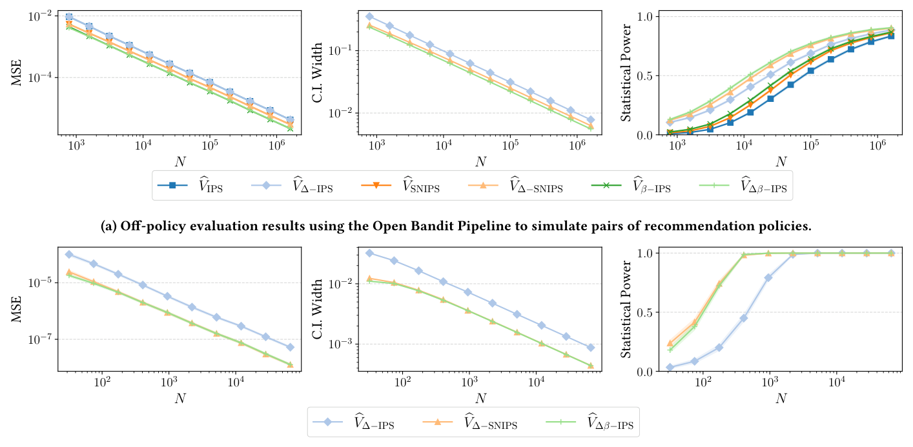

Δ-OPE: Off-Policy Estimation with Pairs of Policies (成对策略的离线策略估计)
- 会议/期刊: RecSys 2024 (Short Paper)
- 作者与机构: Olivier Jeunen, Aleksei Ustimenko (ShareChat)
- 推荐链路定位: 离线评估 / 反事实策略学习（用于线上排序策略的对照决策）
- 研究方向: 强化学习与动态探索推荐 / 因果去偏
- 论文原文: arXiv:2405.10024
- 开源代码: delta-OPE-recsys-2024
TL;DR (1分钟核心速览)
离线策略评估（OPE）的 IPS 类估计量虽无偏却高方差，置信区间过宽而无法支撑上线决策。本文指出工业界真正关心的不是 \(V(\pi_t)\)而是增量\(V(\pi_t)-V(\pi_p)\)，于是把 estimand 改写为对日志策略\(\pi_0\)的单一期望，导出 Δ-IPS / Δ-SNIPS / Δβ-IPS 三个成对估计量，并给出方差最优的闭式加性控制变量\(\beta^\ast\)。在 Open Bandit Pipeline 仿真、连续动作仿真与 160M MAU 短视频平台两周 A/B 上，Δ-OPE 的 MSE、CI 宽度与统计功效全面优于逐点估计，线上目标指标收益显著扩大。
Background & Motivation (背景与核心矛盾)
- 主流范式: 用日志策略 \(\pi_0\)采样的数据 + 逆倾向得分（IPS）无偏估计目标策略\(\pi_t\) 的价值；方差缩减靠 SNIPS（乘性控制变量）或 β-IPS（加性控制变量），学习端靠 CRM 悲观下界。
- 前人局限: ① 无偏性与高方差天然对立，逐点估计的 CI 过宽，type-II 错误率高，线上无法据其判断"是否值得替换现有生产策略"；② 生产策略 \(\pi_p\)与\(\pi_t\) 高度相关，但逐点范式把二者当作独立个体分别估值，白白丢弃了相关性带来的可用信息。
- 核心洞察 (Key Insight): 由方差分解 \(\mathrm{Var}(V_\Delta)=\mathrm{Var}(V(\pi_t))+\mathrm{Var}(V(\pi_p))-2\mathrm{Covar}(V(\pi_t),V(\pi_p))\)，只要\(\mathrm{Var}(V(\pi_p))<2\mathrm{Covar}(V(\pi_t),V(\pi_p))\)成立，成对估计的方差就严格低于逐点估计——而这一条件在推荐场景几乎必然满足，因为\(\pi_t\)通常是对\(\pi_p\) 的小幅微调。
- 本文切入点: 将 OPE 重新定义为"成对"估计任务 Δ-OPE，把两个策略价值之差写成对 \(\pi_0\) 的单一期望，从而在不牺牲无偏性的前提下获得更紧置信区间。
Method (核心方法设计)
1. 整体框架 (Overall Architecture)
输入是由随机日志策略 \(\pi_0\)采集的三元组\(\mathcal{D}=\{(x_i,a_i,r_i)\}\)；核心模块将"两个策略价值的差"重写为可被同一条样本同时估计的量，即倾向比之差\((\pi_t(a|x)-\pi_p(a|x))/\pi_0(a|x)\)乘奖励\(r\)。在此骨架上依次套用三种控制变量得到三个估计量，再由\(\beta\) 的闭式解做方差最小化。输出既可作为评估统计量（配合样本方差与 CI），也可代入 CRM 悲观下界完成策略学习，最后在仿真环境与线上 A/B 完成闭环验证。
flowchart TD
A["日志数据 D=(x,a,r) ~ π0"] --> B["成对估计: (πt-πp)/π0 · r"]
B --> C["Δ-IPS / Δ-SNIPS / Δβ-IPS"]
C --> D["β* 最小化方差"]
D --> E["评估: MSE / CI / 统计功效"]
D --> F["学习: CRM 悲观下界"]2. 关键设计拆解 (Key Designs)
- 成对估计量 Δ-IPS（把差值写进单一期望）：痛点是把 \(V(\pi_t)\)与\(V(\pi_p)\) 分开估导致方差相加。核心改写为
对应的经验估计量即 \(\hat V_{\Delta\text{-IPS}}\)。直觉：分子是两个概率之差，当\(\pi_t\)与\(\pi_p\) 越接近，分子越小、逐样本方差越低，"系统性的共同抖动"被相减抵消，这正是协方差项在起作用的物理表现。
- 加性控制变量 Δβ-IPS 与最优 \(\beta^\ast\)：在成对估计上再减一项\(\beta\)，利用\(\mathbb{E}_{\pi_0}[\pi_t/\pi_0]=\mathbb{E}_{\pi_0}[\pi_p/\pi_0]=1\) 保证无偏性，形式化导出方差最小化条件
即"按倾向比之差平方加权的奖励均值"。相比 SNIPS 的比值形式，加性项保持线性、支持小批量优化，且因为是方差的二次函数，\(\beta^\ast\)使估计误差在 MSE 意义下最优。特例\(\pi_p\equiv\pi_0\) 时 Δ-IPS 退化为 Williams 基线校正，说明本框架统一了既有做法。
- 训练目标与推理开销：学习端沿用 Counterfactual Risk Minimization，用样本方差惩罚构造悲观下界 \(\mathcal{L}=-(\hat V_\Delta-\lambda\hat\sigma)\) 作为损失；估计器线性可加，无需额外负采样。相比 doubly robust 需要训练奖励模型，加性控制变量只多一次常数估计，推理/训练开销几乎为零，这是其在工业可部署性上的关键优势。
Experimental Setup & Evaluation Protocol (实验设置与评估协议)
- 数据集与预处理: 本文无传统交互数据集，采用三类实验，统计如下：
| 实验 | 来源 | 规模/参数 | 说明 |
|---|---|---|---|
| 离散动作仿真 | Open Bandit Pipeline | \(\vert\mathcal{A}\vert\in\{5,10,15\}\)，softmax 温度\(\{1,2,4\}\)，\(N\in[800,1.6M]\) | \(\pi_{\text{lr}}\)与\(\pi_{\text{rf}}\) 两策略对 |
| 连续动作仿真 | 自建 Numpy/Scipy | 5 维各向同性高斯，\(\Sigma=0.5I\)，真实\(\Delta=0.005\) | 模拟多目标标量化权重 |
| 线上 A/B | 短视频平台 | 160M MAU，两周，6.4M/14.8M 用户 | 生产环境对照 |
- 数据划分与防穿越: 仿真以 \(10^3{-}10^6\) 的样本量级逐一评估、重复 1000 次消除随机化噪声；线上采用两周随机对照 A/B，确保无穿越。
- 排名评测协议: 属离策略评估协议，非全库排序——评估指标为 MSE、95% CI 宽度与统计功效（\(1-\)type-II error）；线上用 Bonferroni 校正的 95% CI，显著阈值\(p<0.05\)。
- 对比基线与超参: 逐点 IPS/SNIPS/β-IPS 对成对 Δ-IPS/Δ-SNIPS/Δβ-IPS；\(\beta\) 取经验闭式解，学习目标最大化相应下界。
Key Experimental Results (实验关键数据)
1. 主实验对比 (Main Results)
估计量族在离散与连续仿真的相对表现（源文图 1 定性排序，↓为好，加粗为最优）：
| 估计量 | MSE | CI 宽度 | 统计功效 | 备注 |
|---|---|---|---|---|
| IPS (逐点) | 高 | 无法成对量化 | 低 | 基线 |
| SNIPS (逐点) | 中 | — | 中 | 乘性控制变量 |
| β-IPS (逐点) | 中 | — | 中 | 加性控制变量 |
| Δ-IPS (成对) | 中 | 中 | 中 | 成对基线 |
| Δ-SNIPS (成对) | 低 | 较窄 | 较高 | Delta 法近似方差 |
| Δβ-IPS (成对) | 最低 | 最窄 | 最高 | 仿真+连续双最优 |
线上 A/B（Bonferroni 校正 95% CI，加粗为相对更优的收益区间）：
| 优化目标 | 周期/规模 | Retention | Engaging Users | Learnt Reward |
|---|---|---|---|---|
| \(\hat V_{\text{SNIPS}}\) 下界 (逐点) | 14d / 6.4M | [−0.05%, +0.07%] | [−0.12%, +0.12%] | [+0.04%, +0.27%] |
| \(\hat V_{\Delta\text{-SNIPS}}\) 下界 (成对) | 14d / 14.8M | [−0.04%, +0.06%] | [+0.00%, +0.19%] | [+0.14%, +0.32%] |
2. 消融实验 (Ablation Study)
以"控制变量类型"作为消融维度（成对骨架固定）：
| 配置 | 离散动作仿真 | 连续动作仿真 | 结论 |
|---|---|---|---|
| w/o 成对 (逐点 IPS) | 功效低、CI 宽 | 统计功效≈0 | 成对是必要前提 |
| w/o 控制变量 (Δ-IPS) | 中等 | 中等 | 仅享受协方差收益 |
| w/ 乘性 (Δ-SNIPS) | 较好 | 较优 | 方差不稳定，需 Delta 法近似 |
| w/ 加性+\(\beta^\ast\) (Δβ-IPS) | 最优 | 最优 | 闭式最优、可小批量 |
3. 关键实验发现 (Key Findings)
- 成对骨架是增益主因：连续动作仿真中逐点方法的统计功效为 0（CI 全部重叠），一旦切换成对估计即恢复可用功效，说明"高方差导致漏检"的诊断准确。
- 加性控制变量优于乘性：\(\Delta\beta\)-IPS 在两类仿真中都取得 MSE 最低、CI 最窄、功效最高，与\(\beta^\ast\) 的方差最优性理论一致；同时保留线性可分小批量优化的工程优势。
- 线上收益显著且外溢：\(\Delta\)-SNIPS 下界训练的策略在 Engaging Users\([+0.00\%,+0.19\%]\)与 Learnt Reward\([+0.14\%,+0.32\%]\) 均显著为正，而逐点 SNIPS 的 Engaging Users CI 跨越 0，直接印证成对目标带来更强决策力。

Highlights & Limitations (亮点、对比与审稿批判)
- 与代表作对比 (vs. Prior Work): Swaminathan & Joachims 的 CRM 与 Gupta 等的 β-IPS 均聚焦"单策略估值+控制变量"，把 \(\pi_t\)和\(\pi_p\) 视作互不相关的个体；本文的关键增量是把二者放进同一期望、主动利用协方差，因而在同等样本量下 CI 更紧。相比 doubly robust，同类方差收益无需训练奖励模型，工程代价更低。
- 可迁移亮点: ① "把两策略价值差写成单一期望"这一改写可用于其他 IPS 场景（如双模型对比、A/B 前置门控）；② 在 \(\pi_p\equiv\pi_0\) 退化为基线校正的等价性，可作为旧有指标的免费升级。
- 审稿级局限批判: ① 经典 OPE 的 common-support 与 unconfoundedness 假设仍被沿用，\(\pi_t\)与\(\pi_0\)支撑不交叠时倾向比爆炸的数值稳定性未讨论；② 仿真场景相对简单（模仿学习两模型或高斯均值），与真实高维曝光位置共享/连续动作对齐的复杂性尚有差距；③\(\Delta\)-SNIPS 只能渐近无偏且需 Delta 法近似方差，稳定性弱于加性版本。
Rating (四维评分)
- 方法创新性 (Novelty): ⭐⭐⭐⭐ （把 OPE 从点估值翻转为成对差值，方差分解条件给出清晰的物理直觉与最优 β 闭式解）
- 评估协议与实验扎实度 (Protocol & Experiments): ⭐⭐⭐⭐ （仿真+连续+真实线上三层验证，Bonferroni 校正与统计功效指标严谨，但仿真规模偏小）
- 写作与数学规范度 (Clarity & Rigor): ⭐⭐⭐⭐ （估计量推导与无偏性证明简洁干净，Δ-SNIPS 方差近似虽需 Delta 法但表述清楚）
- 工业落地与复现价值 (Industrial & Practical Value): ⭐⭐⭐⭐⭐ （加性变量零额外推理开销、支持小批量，源码开源，160M MAU 线上 A/B 直接背书）